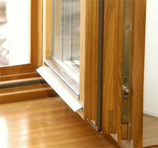
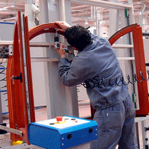
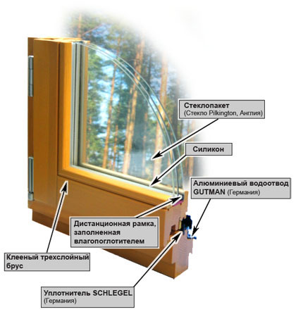

Материалом для изготовления дорогих качественных деревянных окон чаще всего служит древесина ценных пород сосна, лиственница или дуб, при производстве же окон более низкой ценовой категории используют сосну. Высокое качество готового изделия обеспечивается применением только ядровой древесины, так как она отличается высокой прочностью и менее подвержена гниению.
На первой стадии производства ядровую древесину отделяют от заболонной и тщательно просушивают, чтобы уменьшить внутреннее напряжение и исключить растрескивание. Влажность заготовок для изготовления деревянных окон на выходе из сушильного агрегата не должна превышать 15%.
Затем производится распил и выбраковка, в процессе которой отсеиваются заготовки, имеющие высокую сучковатость, смоляные карманы и другие пороки древесины. Конечным этапом распила являются так называемые ламели, которые обязательно подбираются по направлению волокон. Для склеивания бруса используют около трех ламелей с волокнами различного направления, для того, чтобы в дальнейшем исключить деформацию окна.
Для изготовления изделий высокого качества используются только цельные ламели, тогда как более дешевые, базовые варианты состоят из нескольких коротких ламелей, сращенных на микрошип с торца. Такие модели хоть и не отличаются низкой прочностью, но все же, значительн6о проигрывают с эстетической точки зрения, особенно при прозрачной отделке окон. Промежуточным вариантом, позволяющим снизить стоимость, сохранив высокие эстетические характеристики, является производство клееного бруса без использования сращенных ламелей на лицевых поверхностях
Далее на специальных линиях производится нанесение клея, сращивание и прессование заготовок в продольном направлении, в результате чего на выходе получается трехслойный клееный брус, который впоследствии калибруется на специальном четырехстороннем станке.
Следующим этапом производства являются столярные работы, включающие в себя фрезерование из бруса так называемого оконного профиля, торцовку отдельных деталей и изготовление угловых соединений., после чего производится вырезание отверстий под шпонку, а затем сборка конструкции при помощи специального клея и ее прессование.
С целью защиты получившейся рамы от внешнего воздействия, готовое изделие методом окунания обрабатывается фунгицидными и антисептическими препаратами, затем шлифуется для снятия поднявшегося древесного ворса, после чего грунтуется и окрашивается с использованием специальной безвоздушной технологии, что позволяет создать более устойчивый слой краски по сравнению с обычным пульверизаторным окрашиванием.
Заключительный этап производства деревянных окон - установка фурнитуры, уплотнителей и водоотводных бортиков, после чего на оконную конструкцию устанавливается стеклопакет и изделие считается готовым.